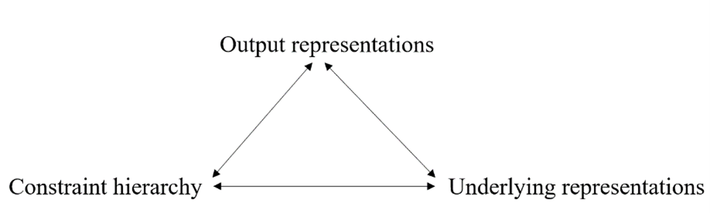
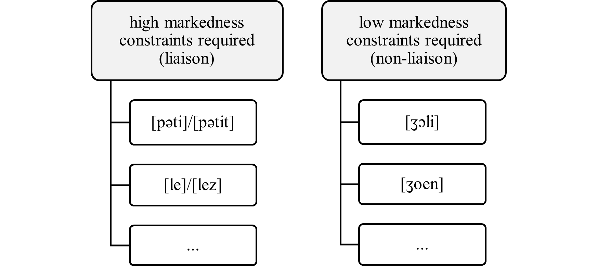

2 Background and Theoretical Framework
2.1 Introduction to phonologically conditioned allomorphy
Allomorphy refers to the variations in a morpheme’s phonological form, often controlled by contextual linguistic factors arising from morpho-syntax or morpho-phonology. The allomorph variants of a morpheme can exhibit various degrees of phonological dissimilarity and idiosyncrasy. For example, the verb to be in English presents three dissimilar forms in the present tense (am/is/are) that are morphologically conditioned and somewhat idiosyncratic, as the choices are not consistent across person and number. In contrast, the two indefinite article forms in English (a/an) are more phonologically similar and demonstrate regular conditioning, as the choice depends on whether the noun begins with a vowel or consonant. The latter example is commonly referred to as phonologically conditioned allomorphy (PCA), where the phonological context determines the selection of the allomorph. In such cases, the allomorphs selected can often be considered as optimizing and motivated by avoiding marked phonological structure (cf. “non-optimizing phonologically conditioned suppletive allomorphy” in Paster, 2006: 76-97). Nevins (2011) outlines six types of phonological conditions that lead to optimized and natural outputs. The most prevalent type involves conditions that produce optimized (unmarked) syllable structures, ranging from preference for onsets, dispreference for codas, or sonority drops in codas (for a comprehensive review, see Nevins, 2011: 6-8; Paster, 2006: 63-71). Besides at the level of syllable structure, other types of phonological conditions can appear at the level of segments or prosody.
The next section will introduce the case study focusing on a phonologically conditioned allomorphy phenomenon in French. French liaison presents challenges regarding the phonological conditions governing allomorph selection and representations which will have consequences for learning.
2.2 French liaison
Liaison is a frequent and widespread morpho-phonological phenomenon in French which has received great attention over the years in the study of the phonological grammar of French (Storme, 2024; Smolensky and Goldrick, 2016; Tranel, 2000; Selkirk, 1974). In terms of its domain, it is categorized as external allomorphy where the conditioning factors are determined by phonological information in adjacent words in the higher prosodic domain. In this respect, liaison is also known as an external sandhi phenomenon , since the alternation occurs at the boundary of two words. The locus of liaison is limited to certain syntactic configurations; at the same time, it is also affected by variation and sociolinguistic variables (Meinschaefer, Sven and Frisch, 2015; Durand and Lyche, 2008). The following data points illustrate the basic pattern in prenominal configurations. The examples (1−4) are of noun phrases with two syntactic configurations in which liaison applies, including [determiner + noun] and [adjective + noun] such as (1) the plural definite article les with the allomorphs [le]/[lez], (2) the masculine singular indefinite article un with the allomorphs [œ̃]/[œ̃n], (3) the numeral modifier deux ‘two’ with [dø]/[døz] and (4) the masculine singular adjective petit ‘little’ with [pəti]/[pətit]:
| (1) | (2) | ||||||
|---|---|---|---|---|---|---|---|
| a. | les bébés | [le.be.be] | ‘the babies’ | a. | un bébé | [œ̃.be.be] | ‘a baby’ |
| b. | les amis | [le.za.mi] | ‘the friends’ | b. | un ami | [œ̃.na.mi] | ‘a friend’ |
| c. | les ours | [le.zu.ʁs] | ‘the bears’ | c. | un ours | [œ̃.nuʁs] | ‘a bear’ |
| (3) | (4) | ||||||
| a. | deux bébés | [dø.be.be] | ‘two babies’ | a. | petit bébé | [pə.ti.be.be] | ‘little baby’ |
| b. | deux amis | [dø.za.mi] | ‘two friends’ | b. | petit ami | [pə.ti.ta.mi] | ‘little friend’ |
| c. | deux ours | [dø.zuʁs] | ‘two bears’ | c. | petit ours | [pə.ti.tuʁs] | ‘little bear’ |
The final consonant, here [z, n, t] in bold, in the VC# allomorphs is referred to as the “liaison consonant” (LC) in the literature. The basic generalization in these examples is that some structural property of the following words determine the presence of the allomorph containing the liaison consonant or lack thereof. As examples (a-c) for each allomorph set show, the onset of the left word (nouns) seems to be conditioning the choice of the allomorph in the right morpheme. Examples (a) are C-initial nouns, resulting in the selection of the V-final allomorph. In contrast, examples (b) and (c) demonstrate V-initial nouns, which results in the allomorph containing the liaison consonant.
To fully understand the role of this pattern in the morpho-phonological system of French, it is essential to recognize that morphemes with allomorph pairs, that is those involved in liaison, are lexically determined and do not constitute a coherent class. According to Côté (2011: 5) the morphemes grouped under liaison are argued to be either among closed lexical classes or specific morphological categories. The determiners (1−2) are an example of the closed class of morphemes, other functional morphemes in this category are clitics, conjunctions, and prepositions. The specific morphological categories include adjectives, nouns, adverbs, within compounds and fixed phrases. However, it is crucial to note that this is not a language-wide pattern; for instance, not all [adjective + noun] configurations in French follow the same pattern across-the-board. The data in (5) shows two masculine adjectives which do not undergo liaison. Examples (5a) and (5b) show C-initial nouns and examples (5c) and (5d) V-initial nouns which all co-occur with non-alternating adjectives joli [ʒɔli] and jeune [ʒœn].
| (5) | |||||||
|---|---|---|---|---|---|---|---|
| a. | joli bébé | [ʒɔli.be.be] | ‘pretty baby’ | b. | jeune bébé | [ʒœn.be.be] | ‘young baby’ |
| c. | joli ami | [ʒɔli.a.mi] | ‘pretty friend’ | d. | jeune ami | [ʒœ.na.mi] | ‘young friend’ |
The contrast in examples (4 vs. 5) illustrate an important empirical pattern to be captured, whereby a situation is created for phonological processes favouring naturally well-formed structures in an allomorph to be restricted to only certain morphemes. The nature of these restrictions appears quite arbitrary which even seems to be insensitive to the morpho-syntactic categories of morphemes. This is evident from the fact that certain groups of prenominal adjectives possess allomorphic pairs (4), while others do not (5).
From the point of view of acquisition, it is worth mentioning that the right words also contribute to creating added irregularities in the pattern. Therefore, considering the phenomenon as a whole, idiosyncratic and morpheme-specific characteristics extend to the right words which were introduced as the conditioning factor. Examples in (6) illustrate that certain nouns traditionally categorized as h-aspiré are anticipated to condition the C-final allomorph but in fact resist it (for a review of historical facts see Southworth, 1970). A small group of words such as homard, héros, and hibou which phonologically begin with a vowel in modern French, function as if they are C-initial, thereby not selecting the allomorph containing the liaison consonant (cf. examples b and c in 1−4). Therefore, in the event that a h-aspiré noun constitutes the context in prenominal liaison, the basic generalization does not hold and the regular phonological sensitivity of the plural definite morpheme is neutralized.
| (6) | ||||
|---|---|---|---|---|
| a. | les homards | [le.ɔm.aʁ] | *[le.zɔm.aʁ] | ‘the lobsters’ |
| b. | les héros | [le.eʁo] | *[le.zeʁo] | ‘the heroes’ |
| c. | les hiboux | [le.ibu] | *[le.zibu] | ‘the owls’ |
After having examined the basic synchronic patterns and characteristics of morphemes within the higher prosodic domain where liaison occurs, it must be noted that the system of liaison has evolved over hundreds of years (Morin, 2005). The idiosyncratic nature and irregularities observed are largely attributed to diachronic factors. Overall, the irregular interactions between phonological elements and morphology give rise to various analyses and competing theories concerning the organization of grammar. Several accounts have also been proposed about the affiliation of the liaison consonant (for a summary see Côté, 2011: 8; Tessier et al., 2023: 3; Storme, 2024: 31) where it could be associated with the word1 (e.g., les), word2 (e.g., ami), both or neither. This system of liaison, shaped by both synchronic and diachronic influences, has sparked debates regarding the mechanisms of allomorphy selection. Some accounts emphasize morphological listing (Paster, 2006; Embick, 2010), while others such as Smith (2015) advocate for constraint-based models where the ranking of phonological and morphological constraints select the underlying representations. As Nevins (2011: 23) notes, using artificial language acquisition experiments where “diachrony is fully controlled by the experimenter and nonetheless the learner demonstrates the emergence of a preference for phonological optimization based on sparse or insufficient data” can be a good test bed for this debate.
In the next section, to shed some light on the extent to which the role of phonology is central in speakers’ minds, the literature on children’s acquisition of French liaison is reviewed to discuss different approaches explaining empirical results in experimental studies with young children. Additionally, a brief overview of developmental stages in morphophonemic learning is provided.
2.3 Developmental path of morpho-phonological acquisition and the literature on child acquisition of liaison
It is generally accepted that early in the developmental path of phonological acquisition infants exhibit signs of developing sensitivity to phonotactic patterns, allowing them to build their foundational phonological knowledge by 8 to 12 months of age (for a recent review, see Sundara et al., 2022; Jusczyk, 2000). Learning about alternations typically occurs later, starting around 12 months (White and Sundara, 2014). Perception studies support this notion, revealing that infants (approximately 9 months old) can distinguish phonotactic probabilities among words (Friederici and Wessels, 1993) and employ this distributional information for word segmentation (Mattys and Jusczyk, 2001), as well as for learning (voicing) alternations (White et al., 2008). A longitudinal study by Luckaszewicz (2006) reports that a child aged 3;5-8 was more successful at mastering alternations that reflect the phonotactic rules of Polish than those found only in specific morphemes. These studies suggest that phonotactic knowledge may play a crucial role in guiding the subsequent learning of alternations. Further along the developmental path, evidence regarding infants’ receptive morphological knowledge indicates that they display sensitivity to morpho-phonological patterns in their second year of life, well before they achieve mastery of these patterns in later stages (Soderstrom et al., 2007). Understanding morpho-phonological alternations involves mapping variations in surface forms to underlying representations and recognizing morphemes’ distinct meanings. In this context, the literature on morphological acquisition illustrates that the discovery of meaning influences infants’ acquisition of suffixes (Mintz, 2013). However, more recent experiments reveal that children’s knowledge of morphology develops concurrently with their understanding of phonology and semantics in English (Kim and Sundara, 2021) as well as in French (Marquis and Shi, 2012). In fact, Kim and Sundara (2021) suggest that their findings propose a potentially bidirectional relationship between the acquisition of morphology and phonology, challenging the earlier assumption that phonological acquisition solely drives morphological acquisition.
As Tessier (2016:1) points out, acquiring morpho-phonological patterns presents challenges both to learners and researchers as “the learner must determine a set of lexical representations attached to meanings, and also control the phonological regularities involved in the combinations of those stored representations”. In other words, morpho-phonological learning is inherently more complex than phonological learning. While it is possible to account for across-the-board phonological alternations by the phonological grammar alone, morpho-phonological patterns necessitate the integration of morphology, semantics, and phonology. For instance, consider sequences involving two morphemes verb + X, such as talk+[-t] and log+[-d]; the complexity in mastering the alternation of forms X arises from several interrelated components. It is essential to acknowledge that developmental processes are more entangled and iterative than linear in reality. These components can be learned synchronously or asynchronously, as Kim and Sundara (2021) show learning can be concurrent across domains. Regardless of the relative order of acquisition in the developmental path of learning allomorphy, the key components that an ideal learner must acquire along their path to master the variations of the English past tense suffix1 is outlined in (7).
| (7) | ||
|---|---|---|
| a. | These sequences are comprised of 2 morphemes: verb + morpheme X. | |
| b. | Morphemes talk and log are verbs with their respective meaning. | |
| c. | Morphs [-t] and [-d] are similar in form (broadly speaking phonological similarity is not a requirement for allomorphs, but can be used as a cue in some cases). | |
| d. | Morphs [-t] and [-d] share the same meaning (or syntactic function). | |
| e. | Distributions of [-t] and [-d] follow a phonological pattern ([-t] after a voiceless non-sibilant C; [-d] after a V or voiced non-sibilant C). | |
| f. | Morphs [-t] and [-d] should be represented and stored in the lexicon as variants of one morpheme <+past tense> and not separately. |
In certain instances, alternations related to a morpheme may adhere to the phonotactic rules of the language. For example, the acquisition of past tense allomorphs in English aligns with learning static restrictions found in mono-morphemic nouns about similarity in voicing in sequences of adjacent obstruents. Therefore, discovering the phonological basis for these alternations can, at least theoretically, be informed and guided by phonotactic learning. Empirical support for this issue is illustrated in a series of experiments by Chong (2021) where participants learned the alternations across morpheme boundaries best when the patterns matched the stem-internal phonotactics. However, it is common for phonological alternations to be limited to specific morphemes, presenting an additional challenging component for learners to resolve along with the components in (7a−f). As discussed in the previous section, the case of French liaison exemplifies this phenomenon.
The latter half of this subsection focuses on the research related to the acquisition of French liaison. Various scholars have explored the early development of this morpho-phonological pattern utilizing both corpus data and experimental methodologies (Buerkin-Pontrelli et al., 2017; Demuth and Tremblay, 2008; Dugua, 2006; Chevrot and Fayol, 2001; Morel, 1994). This review will succinctly examine recent studies that aim to explain and characterize the errors associated with representations of prenominal liaison and nouns that begin with vowels.
Evidence from perception experiments using a preferential-looking paradigm, as designed by Babineau and Shi (2014), indicates that children as young as 2;0 year of age familiarized with novel pseudo-words in various liaison contexts (which could be ambiguous between being vowel-initial or consonant-initial) accepted both segmentations of pseudo-words. For instance, in case of phrases like un onche [œ̃.nõʃ] or des onches [de.zoʃ], the pseudo-word onche could be ambiguous between combinations of [œ̃]+[nõʃ] where the syllable boundary and word boundary are aligned or [œ̃n]+[õʃ] where they are not. In contrast, 1;8 year old children tend to segment these novel words as consonant-initial (e.g., [nõʃ], [zoʃ].). More recently, Babineau et al. (2023) conducted follow-up experiments using different familiarization conditions with 2;0 year olds to shed light on the nature of their knowledge regarding liaison. Specifically, the goal was to determine whether their knowledge is shaped by language-specific statistical information from sub-syllabic distributions in French or whether it is not based on language-specific information per se and is only using broad statistical sub-syllabic distributions. If the children use their language-specific knowledge they could leverage it to overcome the universal bias influencing their segmentation which aligns syllable onsets with word edges. Their findings support the notion that, at this age, infants can recognize the co-occurrence patterns particular to certain liaison consonants in French in a larger context (including the first words) from which the sub-syllabic distributions emerge while disregarding the universal segmentation bias. However, this advanced top-down processing that resembles adult understanding is not as evident in the production of the toddlers of the same age as the authors also point out. Now before turning to the two different models discussed in the literature to explain and predict the production of French-speaking children, I will summarize the main error categories and empirical facts for young children as documented in different corpora.
The rate of production errors during the first two years of life indicates that mastering liaison takes considerable time and often extends beyond two years. Buerkin-Pontrelli et al. (2017) analyze and report data from the Lyon corpus (Demuth and Tremblay, 2008) in CHILDES database (MacWhinney, 2000), categorizing the errors into two main types: a. those that involve phonological processes such as truncation or reduplication (e.g., les ami [le.mi] or [le.ma.mi]); and b. other errors related to the liaison consonant, such as insertion, replacement and omission (e.g., joli ami [ʒɔ.li.na.mi], les ami [le.na.mi], les enfants [le.ã.fã]). Their analysis reveals that during the early stages until 2;0 the errors are predominantly of a phonological nature to fill the onset positions of V-initial words or preserve minimal-foot structure. Between the ages of 2;0 to 3;0, errors involving liaison consonants appear in the children’s speech within the corpus. Further than 3;0, however, available data from one child in the corpus demonstrates that such errors are comparatively rare between the ages of 3 – 3;5. They highlight that those phonological errors (truncation and reduplication) were more common than liaison consonants errors, however the overall trajectory of the errors could suggest that as children’s phonological system stabilizes, they might produce errors which are directly due to their early awareness of liaison. One important point to keep in mind with regards to these studies is that the estimated age of mastery varies depending on whether the data is elicited or produced spontaneously. The spontaneous liaison errors documented might decrease in earlier age ranges compared to elicited errors in experimental settings that could be even found with children tested up to 5;2. Buerkin-Pontrelli et al. (2017) also present results from an original experiment to investigate whether 3;0 children could produce two novel vowel-initial words in both liaison and non-liaison contexts productively. Their findings reveal that 3;0 children are reaching adults’ accuracy rate in full phrase contexts, which suggests they can segment and use liaison after a brief exposure. On the other hand, two-thirds of the children’s errors involved replacements or insertions, contrasting with adults, who tended to make more errors by omitting the liaison consonant. This indicates that children struggle more than adults to provide vowel-initial forms in non-liaison-triggering contexts.
There are two models put forward in the literature to explain children’s acquisition of liaison. One model has examined the stages of learning liaison through a phonological lens (Buerkin-Pontrelli et al., 2017; Wauquier-Gravelines and Braud, 2005). With this model, the stages of acquisition are based on the evolution of syllabic templates. It is argued that following the maximum onset principle, children rely on distinct mechanisms in their errors to resyllabify word-final consonants in the word resulting in V.CV syllables rather than VC.V syllables. According to this model, once the phonological development is more complete, by ages 3;0 to 3;5, children can utilize morphological bootstrapping, enabling them to identify morphemes and the contexts in which particular liaison consonants (LCs) appear. The second model follows a constructionist approach (Chevrot et al., 2009) couched within usage-based theories (Tomasello, 2003) and argues that the acquisition of liaison occurs in three stages. In this framework, it is predicted that children store schemas (such as les + X, un + X) without information about the liaison consonant in determiners and alternating noun variants from 3;0 to 5;0. By the ages of 4;0 to 5;0, they begin to develop schemas that reflect the relationship between a determiner and a class of noun variants (e.g., les + /zX/, un + /nX/). As Buerkin-Pontrelli et al. (2017) indicate, the expected timelines for these stages in the constructionist model are not entirely precise, as children tend to exhibit fewer liaison errors after the age of 3. However, constructionist models heavily depend on input frequency, leading to the prediction that certain nouns are more closely associated with errors in singular contexts than with plural. As supported by the results of the experiment reported by Buerkin-Pontrelli et al. (2017), input frequency plays a role in early stages of learning; however, its role and its interaction with other aspects of learning more complicated patterns such as liaison needs further investigation.
In the next section, before I discuss a proposal regarding how the phonological grammar can enable the learning of liaison-like patterns—and to what extent it can do so, along with the predictions it generates for the experiment—I will first provide an overview of the nature of the learning problem.
2.4 Learnability of liaison as a morpheme-specific phonological phenomenon within Optimality Theory
The logical problem of language acquisition as summarized by Kager (2004: 323) from the original work on learnability in Optimality theory (Tesar and Smolensky, 2000) concerns learning three factors as shown in Figure 2-1: a. output representations; b. underlying representations; c. constraint hierarchy. These factors are assumed to be interdependent which means that learners in principle use iterative strategies to be able to go back and forth between these elements.

Fundamentally, as Tesar and Smolensky (2000) introduced this problem, learning could be decomposed along some dimensions with processes that must interpret the hidden structure of the output (robust parser component) and compute the optimal structure for the underlying form (lexicon learner component) through the constraint hierarchy (grammar learner component). Morphophonemic learning in contrast to phonotactic learning involves an additional layer of morphological information, specifically when deriving underlying representation. Consequently, learning idiosyncratic patterns of allomorphy involves interaction between different parts of linguistic knowledge, namely, the lexicon and phonology. Two aspects of learning, in particular, are of interest in this thesis for an account that deals with the learnability problem of morpheme-specific alternations like liaison.
Firstly, as demonstrated by the data in section 2.2, the idiosyncratic nature of external allomorphy patterns like liaison can be attributed to their extended domain. Mascaró (2004) highlights the paradoxes in this type of allomorphy with some examples from English which he refers to as external allomorphy. In the case of French liaison, to begin with, classifying word1s under liaison (allomorphy) or non-liaison (non-allomorphy) classes is not predictable by surface phonological forms. A lexical solution enables the learner to solve the problem for similar cases of unpredictability, for instance, regular vs. irregular past tense verbs in English: walk/walk-ed, talk/talk-ed vs. buy/bought, bring/brought. In cases when some verbs do not take the regular allomorph (-ed suffix), the past tense suppletive allomorph is listed in the lexicon. Whereas in liaison, a similar lexical solution does not suffice; learners must be aware of a bigger domain that extends beyond the word1 and includes the adjacent right word. For any given word1, the learner needs to know when to apply the allomorphy by considering if the word2 is C/V-initial. In other words, the learners would not be able to simply list every word1 + word2 phrase in the lexicon as they might do with the English irregular past tense forms.
Even though the classification of each word1 under allomorphy or non-allomorphy could seem rather arbitrary to the leaner and without any phonological motivations, phonological optimization is important for the participating word1s in liaison that do have an allomorphic pair. Predicting the choice of the allomorph in liaison patterns is possible through the lens of phonological optimization as it is natural to create forms that are following the most unmarked outcome in terms of syllable structure. However, if phonology is emerging to create an optimal structure in the larger prosodic domain of the allomorphy, the puzzle remaining for the learner is now the following question: why is it only restricted to just a limited set of lexical items? Simply stated, in the current case study, the lexical and arbitrary nature of allomorphy itself creates an arbitrary partition in the phonological grammar as shown in Figure 2-2. On the one side of the grammar, in the closed lexical set of liaison morphemes, prioritizing optimal structures in the grammar with constraints on markedness is required. While on the other side, in morphemes outside that closed lexical set, it is not.

In the learning theory outlined below in the following subsections, I aim to address how this issue could be managed within the learner’s grammar. The current proposal involves a mechanism based on constraint indexation (Pater, 2010) applied to the learning of liaison.
The second rather unique property of liaison pertains to the locus of the alternation in the allomorphs along with the order of the of specific morphemes relative to each other. As seen in examples (1‒4) in Section 2.2. liaison is an external sandhi phenomenon which occurs in a domain of two morphemes where the first morpheme exhibits alternation on its right edge (e.g., [peti]~[petit]), bordering the left edge of the second morpheme. When the second morpheme begins with a vowel, the liaison consonant is resyllabified as an onset of the second morpheme. Therefore, especially in noun phrases where the second morpheme is a vowel-initial noun, the noun can be resyllabified with different onsets every time it is combined with a variety of liaison consonants in different contexts. Similar patterns are found in Celtic languages, which exhibit initial consonant mutation on their nouns in different contexts such as with pronouns or prepositions (Hannahs, 2011). However, such patterns are relatively uncommon and less widespread typologically compared to other cases of external allomorphy, where suffixation is more prevalent. As observed in the developmental trajectory of learning liaison, this presents challenges in the initial stages of learning morpho-phonological phenomena for learners, making it particularly challenging to correctly represent the input forms of morphemes involved in liaison.
In the following subsection, a detailed discussion of the issue regarding the input and its crucial role in a learnability account with an OT-based learning algorithm is presented. This is followed by an illustration of the formal properties that such a grammar must possess to enable learning.
2.4.1 Learning the underlying representation
In the course of acquisition, a learner must simultaneously learn the ranking and the lexicon. The latter has been incorporated into the system as identity mapping based on the principle of lexicon optimization (Prince and Tesar, 2004). When learners are faced with no evidence of overt alternations, the chosen underlying form among possible input forms is the one that makes the most faithful input-output mapping. Learning the underlying representations of morphemes is crucial to the process of learning the allomorphy, as “the underlying representations influence the grammar and the grammar influences the underlying representations” (McCarthy, 2005: 25). However, it is important to note that in a real-life scenario of language acquisition, morphological analysis and segmentation must be integrated with other aspects of learning. Leveraging the paradigmatic information in the alternation for computing the underlying representation seems accessible to the analyst. However, it is deemed to be tractable for learners only at a stage where they have made progress in understanding the semantics and segmentation of the phrases they encounter as overt forms.
In cases of allomorphy, the underlying representations of morphemes and the alternation are highly interdependent and “have to be inferred from combined analytic assumptions about the output and the constraint hierarchy” (Kager, 2004: 322). To expand on this, it is useful to first consider a less complex example of allomorphy as a point of comparison where the alternation is motivated by a phonotactic constraint in the language2. In the previously mentioned example of the English past tense allomorphs (e.g., walk[t], jog[d], etc.), the conditions for the voicing alternations are true such that the suffix’s alveolar consonant is voiced after a voiced consonant and voiceless after a voiceless consonant. This distributional restriction also occurs within clusters in mono-morphemic words which are always similar in voicing. Having successfully learned the phonotactic constraints rankings governing the distributions of phonemes, in early stages of morphophonemic learning the learner needs to recognize the past tense morpheme as a suffix which means an underlying representation must be specified. Failing to select the appropriate underlying representation could result in the learner’s inability to learn the alternation given its existing constraint ranking. Theoretically, in the process of learning, when the learner makes errors on an alternation, two possible scenarios exist: either the constraint ranking within the grammar or the underlying representation would need to be revised. For the learners of the regular past tense allomorphy in English, modifying the grammar implies revising the constraint hierarchy which had been successful for mono-morphemic words. Any other constraint hierarchy would not be consistent with the rest of the learning data in English as a modified ranking could not apply to both the mono-morphemic words and words including the past tense suffix. Therefore, out of the two choices, the underlying representation is more likely to be revised. For learners of French, however, part of the challenge lies in the fact that liaison is not motivated by a phonotactic generalization that is language-wide. Furthermore, if the learner is to revise its underlying representations, as mentioned before, the unique location of the alternation in French liaison presents an additional layer of complexity for segmentation, which complicates the learning process of deriving underlying representation.
The information provided in the examples below can be categorized into two types: morphemic contrast and morphemic alternation (Tesar, 2014: 247). The following paradigm in (8) provides an opportunity for the learners to utilize the morphemic alternation information and compare phrases demonstrating diverse contexts for the same morpheme (in this case, plural determiner /le(z)/).
| (8) | |||
|---|---|---|---|
| a. | les bébés | [le.be.be] | ‘the babies’ |
| b. | les amis | [le.za.mi] | ‘the friends’ |
| c. | les ours | [le.zu.ʁs] | ‘the bears’ |
To recognize the variation in the forms and to determine that both [le] and [lez] are two possible outputs for the same morpheme indicating the plural determiner, learners need to rely on their understanding of the underlying forms of the morphemes /bebe/ and /uʁs/ or /ami/. However, if the learner has not fully computed the underlying forms in the morphemic contrast paradigm for both the vowel-initial nouns (e.g., /uʁs/) and the consonant-initial nouns (e.g., /bebe/), their ability to learn the multiple representations for the allomorphy will be impacted. The issue specifically arises with vowel-initial nouns and their position. In the following contrastive paradigm in (9), the learners observe the noun /uʁs/ preceded by different morphemes.
| (9) | |||
|---|---|---|---|
| a. | les ours | [le.zuʁs] | ‘the bears’ |
| b. | un ours | [œ̃.nuʁs] | ‘a bear’ |
| c. | petit ours | [pə.ti.tuʁs] | ‘little bear’ |
| d. | joli ours | [ʒɔ.li.uʁs] | ‘nice bear’ |
In this paradigm, the left edge of this noun in French is occupied by various liaison consonants (9a−c), except when it is adjacent to a non-liaison word1, as in (9d) with [ʒɔli]. This ordering results in an unstable position for the onset of the second word which has the potential to be rebracketed by the learners, as discussed in section 2.3. Understanding that these nouns do not have several C-initial variants and are in fact V-initial requires resisting the segmentation that aligns the onset of the nouns with the onset of the syllable. In phonological theories, aligning the onset of syllables and morphemes is part of the general alignment framework in the universal markedness constraints (McCarthy and Prince, 1993; Tesar and Smolensky, 2000). Consequently, particularly in early acquisition, it might not be surprising that this position of alternation contributes to how this issue is intuitively challenging to overcome. Furthermore, the role and saliency of onsets is also supported by various other psycholinguistic models of lexical segmentation such as the Syllable Onset Segmentation Hypothesis (Content et al., 2000), Shortlist B (Noris and McQueen, 2008).In the context of French liaison, the majority of word2s belong to an open class of lexical items (non-functional). Therefore, the need to resist alternations at the left edge of the word2s is crucial for the learning of the lexicon. As noted by Babineau et al. (2023: 305), “French liaison violates this universal constraint, as liaison sacrifices to some degree the number of minimal pair words in the lexicon”. This also has direct implications for the task of morphological parsing and learning the underlying representations. For example, English learners can infer, due to this bias, that a set of minimally different words like foul, cowl, howl are separate words and not just variants of a vowel-initial word like owl. Conversely, for French learners, syllables like [zuʁs], [tuʁs], [nuʁs] are not separate words, but rather all share the same vowel-initial word [uʁs]. Babineau et al. (2023) also note that this issue is not particularly severe, as the number of possible liaison consonants that can lead to ambiguous syllabification in French is limited to a few consonants.
By examining the issues surrounding underlying representations and segmentation, I have illustrated that learners must navigate the tension between language-specific properties and universal constraints in order to progress along the correct path. In the following subsection, I will propose a heuristic that could lead to a bias under which learning the underlying representations can be achieved for successful learning, and delve into the components of the initial state grammar along with the trajectory to the end state grammar.
2.4.2 Initial state grammar to end state grammar
In the initial state of the grammar, markedness constraints fully outrank faithfulness constraints. This initial state is adopted as it is well-supported by the evidence in the literature of phonological acquisition in Optimality Theory. Smolensky (1996a; 1996b) and Gnanadesikan (1995) suggest this initial state can account for both children’s production and comprehension. It also makes better predictions for learning with no positive evidence of alternations per the Subset Problem (Smolensky, 1996a, Prince and Tesar, 2004). This assumption is also connected to the richness of the base principle in Optimality theory where any imaginable input may be considered since the outputs are constrained by the interaction of constraints. Davidson et al. (2004) report results from experiments on the processing of infants and adults showing that this principle and its consequences for the initial ranking are supported by human linguistic performance. Apart from this traditional assumption, other possibilities within the literature include an unranked state or faithfulness constraints outranking markedness (Hale and Reiss, 1997).
In this analysis, I propose an initial state where all the learners of French start with the schematic Markedness >> Faithfulness constraint ranking with the constraints introduced below in (10).
(10) The initial state grammar G0:
a. Markedness constraints: all speakers have structural constraints for the most unmarked syllable structure (CV.CV): NoV.V3, NoC.C4 as well as alignment constraints Align-L5.
b. Faithfulness constraints: all speakers have constraints that control the input-output correspondence (i.e., penalizing deletion and insertion of segments): Max6, Dep7.
c. These classes of constraints are ranked such that markedness constraints dominate the faithfulness constraint (M >> F):
NoV.V, NoC.C, Align-L >> Max, Dep
In order to tackle the questions of learning morpho-phonological patterns, I focus on basic examples of prenominal configurations introduced above in section 2.2, such as the common sequence of the plural determiner [le]/[lez] + nouns. Beginning from a universal initial state typical of learners of all languages, how does the grammar of learners of French develop as they are exposed to French-specific phonological patterns until they have fully learned morpheme-specific phonological alternations like liaison? The analysis provided here incorporates a mechanism that enables learners to recognize and address inconsistencies in their grammar adopting Pater (2010). This analysis is also informed by additional biases in two places, which will be elaborated upon later throughout this subsection. The learning algorithm implemented in the current analysis follows the biased error-driven constraint demotion algorithm (Prince and Tesar, 2004; Hayes, 2004). Implementing this algorithm, not only does the learner start with a markedness bias in its initial state, but it is also biased towards the markedness constraints during reranking stages or constraint demotion.
In the early stages of phonological development, as discussed in section 2.3, children learn language-specific phonotactics. For my analysis, I assume that prior to learning morphology, French learners acquire some phonotactic and distributional information about their language, which informs their language-specific knowledge. This suggests that during this early stage of learning, out of a tendency to maximize lexicon optimization, the initial bias of highly ranked universal constraints favouring unmarked structures would be gradually overridden by the set of constraints related to being faithful to the input form of words. In the error-driven process of learning, among the sets of phrases that contribute to learners’ language-specific phonotactic knowledge is the non-alternating adjective + nouns in our examples. The non-alternating class of morphemes in general involves an open class of lexical items, making them shape most of the lexicon as they are more frequent type-wise. A learner who encounters phrases such as jeune bébé and joli ami as well as many other similar verbal or prepositional phrases (containing V.V and C.C syllable patterns) simply stores each new word they learn in the input as is, based on the principles of lexicon optimization. The relevant errors learners make with regard to these phrases lead them to updating the initial state constraint ranking. During the update, the biased constraint demotion algorithm imposes a bias in favour of markedness constraints, therefore they are not to be demoted as long as possible
To illustrate how an ideal learning trajectory progresses at each step with an error-driven algorithm, first a table of error archives is presented, and then after resolving the errors, some example tableaux are provided with the new updated grammar at each stage. The table below shows the error archive and provides a pair of candidates consisting of the winning candidate (the observed output) and one losing candidate selected by the current grammar for each input. Each row in this error archive, which is known as the error, indicates whether the constraints prefer the optimal winner (W) or the suboptimal competitor, the loser (L). The novelty in my analysis is the first column in the table called “Error by Current Grammar” which notes whether the errors present in the error archive were made by the current state of the grammar. The current grammar of the learners, written on top of the table, has led them to the errors marked by √. Importantly, the concept of an error archive refers to a kind of permanent storage accessible to the algorithm where learners record their errors. If at any point during learning, the algorithm reads the archive and an error lacks any marks in the first column, it means that it has been archived in previous stages. At the same time, the inputs of input-output mappings that do not make it into the error archive are stored directly in the lexicon also accessible in phonological learning. At this point, the current grammar is the initial state grammar stated in (10).
(11) Error archive with errors of the CG (NoV.V, NoC.C, Align-L >> Max, Dep)
| Error by CG | Input | W ~ L | NoC.C | NoV.V | Align-L | Max | Dep |
|---|---|---|---|---|---|---|---|
| √ | a. /ʒɔli+ami/ | ʒɔli.ami ~ ʒɔli.zami | L | W | W | ||
| √ | b. /ʒɔli+ami/ | ʒɔli.ami ~ ʒɔ.lami | L | W | W | ||
| √ | c. /ʒœn+bebe/ | ʒœn.bebe ~ ʒœ.bebe | L | W | |||
| √ | d. /ʒœn+bebe/ | ʒœn.bebe ~ ʒœni.bebe | L | W | |||
| √ | e. /ʒœn+ami/ | ʒœ.nami ~ ʒœ.ami | W | L | W |
As can be seen from the errors above, the very initial state grammar leads the learner to select these losing candidates which have unmarked syllable structures. Once new errors enter the error archive marked by √, the error-driven algorithm then requires an update and initiates a new constraint hierarchy according to the violation profiles of each candidate pair in terms of their constraint preference. With the biased constraint demotion algorithm, markedness constraints have priority to be placed at the top of the new stratum of the constraint hierarchy provided they prefer no losers. However, this is not the case at this stage, as there are not any markedness constraints which would prefer no losers. Whereas faithfulness constraints, Max and Dep, prefer the winning candidates of the pairs in each error. It is worthwhile to note that including errors that result in reranking Align-L in the first error archive, as seen in cases like error (11e) serves the purpose of providing a comprehensive analysis of all constraints. However, realistically, during the initial stages of phonotactic acquisition, learners may not be fully aware of morphological boundaries within phrases8. In this update, the resulting crucial constraint ranking in (12), achieved by the learner during the phonotactic learning stage, ensures that such errors are not being made anymore moving forward. Thus, all the errors in (11a-e) are then successfully archived.
(12) Phonotactic Grammar: Dep, Max >> NoV.V, NoC.C, Align-L
| /ʒœn/+/bebe/ | Dep | Max | NoV.V | NoC.C | Align-L | |
|---|---|---|---|---|---|---|
| ☞ | [ʒœn.bebe] | * | ||||
| [ʒœ.ni.bebe] | *! | |||||
| [ʒœ.bebe] | *! |
| /ʒœn/+/ami/ | Dep | Max | NoV.V | NoC.C | Align-L | |
|---|---|---|---|---|---|---|
| ☞ | [ʒœ.na.mi] | * | ||||
| [ʒœ.a.mi] | *! | * |
| /ʒɔli/ +/ami/ | Dep | Max | NoV.V | NoC.C | Align-L | |
|---|---|---|---|---|---|---|
| ☞ | [ʒɔ.li.a.mi] | * | ||||
| [ʒɔ.li.za.mi] | *! | * | ||||
| [ʒɔ.la.mi] | *! | * |
The important argument made here for the grammar in (12) is based on a reasonable assumption that when learners arrive at the inconsistency between liaison and non-liaison morphemes, they already possess a not-so-naïve grammar. The grammar with which they enter morphophonemic learning is not exactly the same as the initial state grammar and has undergone some modifications. This is illustrated in the tableaux above and evidenced by an error archive that accumulates as they encounter simple phrases during phonotactic learning.
Gradually, learning the underlying representations of the alternating morphemes becomes more feasible for the learner after gaining some knowledge about the phonotactics and the lexicon. When learners develop a certain level of awareness regarding morphological parsing through semantic or visual cues in the real world, they start forming hypotheses about the additional morpheme they have identified before the nouns in determiner + noun phrases. In other words, the learner eventually must realize that the phrases les amis and les bébés are not monomorphemic and contain more than one morpheme. At the same time, they could conclude that the first morphemes of these phrases are, in fact, semantically related and function as determiners. Incidentally, one type of evidence that can aid them in learning the underlying representation of the alternating liaison morphemes could come from the knowledge of nouns’ underlying representations, especially when learners compare different contrastive paradigms in (9). For instance, as learners become more proficient in understanding the representations of the nouns, they may find it more likely that among the forms they had encountered for the noun ‘friend’ (e.g., [tami], [zami] and [ami]), the underlying representation is /ami/ rather than the other C-initial forms. This realization could in fact lead them to segment the phrases correctly and discover that the first morphemes in phrases like /lez+ami/ or /le+bebe/ are not only semantically related, but are actually the same morpheme. By exploring different options for the underlying representations of the determiner, learners can formulate a range of hypotheses. First, I propose that learners prefer to maintain a single underlying representation rather than positing multiple ones. This approach narrows the hypotheses window and it simplifies the learning process by shifting the responsibility of learning onto the grammar, rather than requiring extensive storage in the lexicon. In this scenario, learners would be faced with two possibilities and they must select one as the underlying form: either the input is shaped as CVC or CV. The two tables below are provided just to illustrate the comparison between the larger input in CVC form (13a-d), and the smaller input in CV form (13e-h). If the learner takes the hypothesis of larger allomorph as the input such as /lez/ or /œ̃n/, the resulting errors would have the following preferences where Dep is indifferent with respect to winners or losers.
(13)
| Input | W ~ L | NoC.C | NoV.V | Align-L | Max | Dep | |
| a. | /lez/ + … | le.zami ~ le.ami | W | L | W | ||
| b. | /lez/ + … | le.bebe ~ lez.bebe | W | L | |||
| c. | /œ̃n/ + … | œ̃.nami ~ œ̃.ami | W | L | W | ||
| d. | /œ̃n/ + … | œ̃.bebe ~ œ̃n.bebe | W | L |
If the learner takes the hypothesis of the smaller allomorph as the input such as /le/ or /œ̃/, the resulting errors would have different preferences where Max is indifferent with respect to winners or losers.
(13)
| Input | W ~ L | NoC.C | NoV.V | Align-L | Max | Dep | |
| e. | /le/ + … | le.bebe ~ lez.bebe | W | W | |||
| f. | le.zami ~ le.ami | W | L | L | |||
| g. | /œ̃/ + … | œ̃.bebe ~ œ̃n.bebe | W | W | |||
| h. | œ̃.nami ~ œ̃.ami | W | L | L |
My proposed heuristic could be in form of a bias in favour of storing the unpredictable information in the input by maximizing the structure encoded in the input. Under this heuristic, the larger allomorph /lez/ or /œ̃n/ (13a-d) would be the best underlying representation among the possible input forms. In other words, in instances of determiner + V-initial noun combinations when the learner has the opportunity to encounter the allomorph form with a maximal structure (here the CVC form), that should be the preferred choice9. With this input the grammar relies on satisfying the NoC.C constraint at the expense of Max, that is, not being faithful to the input by deleting the final consonant10. Other existing alternative analyses in the literature regarding French liaison in an OT-based grammar employ other mechanisms such as constraints for the UR (Smith, 2015) or multiple URs (Storme, 2024). However, applying this simple heuristic renders the input in conjunction with the ranking in the grammar learnable. As a result of choosing the larger allomorph for the underlying representation, learners are left with errors with the error proflies exemplified below in (14). Note that the other faithfulness constraint Dep is not playing a role among the crucial constraints anymore.
(14)
| Input | W ~ L | NoC.C | NoV.V | Align-L | Max | DEP | |
|---|---|---|---|---|---|---|---|
| a. | /lez+ami/ | le.zami ~ le.ami | W | L | W | ||
| b. | /lez+bebe/ | le.bebe ~ lez.bebe | W | L |
To continue learning and to achieve a stable end-state of the grammar, the learner must reconcile the morpheme-specific constraints in two conflicting rankings within its grammar. In my current learnability analysis, I incorporate a mechanism borrowed from Pater’s (2010) constraint indexation model of Optimality Theory to analyze morpheme-specific phonology and exceptionality. He argues that this approach to morpheme-specific phonology offers advantages over previous proposals such as co-phonologies by Inkelas and Zoll (2007). Although similar mechanisms of indexation have been previously proposed by Fukuzawa (1999) and Ito and Mester (2001) for faithfulness constraints, Pater’s (2010) version allows both markedness constraints and faithfulness constraints to be lexically indexed if necessary. According to this approach, inconsistencies can be identified and resolved as the learner encounters them through facing errors during the learning process. The error archive below demonstrates a winner-loser pair for each input, representing the two classes of morphemes. The inconsistency is evident in error rows bolded (15c vs 15d) as there is not a consistent constraint that prefers only Ws. Here each constraint favours a morpheme belonging to a different class and the reranking algorithm reaches a halt. The current grammar of the learners making the last two errors (15d-e) marked below with √ is the grammar after phonotactic learning in (12). The other rows (15a-c) are the previous errors stored in the error archive11.
(15) Error archive with errors of the CG (Max >> NoV.V, NoC.C, Align-L)
| Error by CG | Input | W ~ L | Max | NoC.C | NoV.V | Align-L |
|---|---|---|---|---|---|---|
| a. NL W1: /ʒɔli+ami/ | ʒɔliami ~ ʒɔlami | W | L | W | ||
| b. NL W1: /ʒœn+ami/ | ʒœ.na.mi ~ ʒœ.ami | W | W | L | ||
| c. NL W1: /ʒœn+bebe/ | ʒœn.bebe ~ ʒœ.bebe | W | L | |||
| √ | d. L W1s: /lez+bebe/ | le.bebe ~ lez.bebe | L | W | ||
| √ | e. L W1s: /lez+ami/ | le.za.mi ~ le.ami | W | W | L |
Following the instructions in the algorithm under Pater’s (2010: 20, ex 48) account for inconsistency resolution, the learner must perform the instruction given in (16).
(16) Clone a constraint that prefers only Ws in all instances of some morpheme, and index it to every morpheme for which it prefers only Ws.
As Pater notes in his work, an aspect of constraint cloning remains to be fully elaborated. Particularly, how does the learner proceed when the choice of the constraint to be cloned is not straightforwardly down to one single constraint? The appendix in the original work by Pater (2010) reviews procedures that could be performed by the algorithm (borrowed from linear programming) during learning when the algorithm can not decide which constraint to clone to resolve the inconsistency. He also discusses one option to be the inclusion of an “exceptional” bias targeting the smallest set of morphemes to help the learner choose one solution over the other depending on the lexicon, but he concludes that this procedure needs further research.
My analysis includes the proposal of a bias which could enable the learner to decide among equally available options for constraint cloning. This bias is shaped by considering the current grammar which is itself driven by earlier errors in the error archive. An explicit adjustment to the previous statement is stated in (17).
(17) Clone the constraint that prefers Ws in all instances of the errors committed by the current grammar and index it to morphemes for which it prefers only Ws for those errors.
The minimal inconsistent pairs of errors for French learners /lez+bebe/ and /ʒœn+bebe/ are shown again in a new table below in (18).
(18) Minimal inconsistent pairs of errors by the CG (Max >> NoV.V, NoC.C, Align-L)
| Error by CG | Input | W ~ L | Max | NoC.C | NoV.V | Align-L |
|---|---|---|---|---|---|---|
| NL W1: /ʒœn+bebe/ | ʒœn.bebe ~ ʒœ.bebe | W | L | |||
| √ | L W1s: /lez+bebe/ | le.bebe ~ lez.bebe | L | W |
At this juncture, the choice of cloning the winning preferring constraint is not apparent. The two options below are both equally available to the learner to resolve the inconsistency:
Clone No C.C indexed to liaison W1s (e.g., /lez/)
Clone Max indexed to non-liaison W1s (e.g., /ʒœn/)
As mentioned before, the important assumption taken for granted is that learners of French have a different (more mature) grammar from the initial state grammar at the point when they reach this inconsistency. As can be seen from the winner~loser pair above, currently, non-liaison word1s do not lead to an error by the learner anymore as the W preferring constraint for them is Max which is highly-ranked in the current grammar. A word1 in the liaison class (L W1) is the recent error made by the current grammar. Therefore, guided by the bias introduced in (17) they must clone the constraint preferring Ws for the liaison word1 morpheme (NoC.C), as it is the error committed by the current grammar and index it to that morpheme (NoC.C-L). The clone constraint is added to the constraint hierarchy as shown in (19).
(19)
| Error by CG | Input | W ~ L | No C.C-L | Max | No C.C | No V.V | Align-L |
|---|---|---|---|---|---|---|---|
| a. NLW1: /ʒɔli+ami/ | ʒɔliami ~ ʒɔlami | W | L | W | |||
| b. NLW1: /ʒœn+ami/ | ʒœ.na.mi ~ ʒœ.ami | W | W | L | |||
| c. NLW1: /ʒœn+bebe/ | ʒœn.bebe ~ ʒœ.bebe | W | L | ||||
| √ | d. LW1s: /lez+bebe/ | le.bebe ~ lez.bebe | W | L | W | ||
| √ | e. LW1s: /lez+ami/ | le.za.mi ~ le.ami | W | W | W | L |
Now with the new cloned constraint present, the reranking procedure in the update can be restarted. I will illustrate the biased constraint demotion algorithm here step-by-step. Among markedness constraints, the NoC.C-L constraint is placed on the top stratum, shown in (20), as it is the only markedness constraint that prefers only Ws in an instance of some morpheme. After this constraint is placed at the top of the hierarchy the relevant errors in rows (d-e) would technically be resolved and successfully archived.
(20) No C.C-L >>
| Error by CG | Input | W ~ L | No C.C-L | Max | No C.C | No V.V | Align-L |
|---|---|---|---|---|---|---|---|
| a. NLW1: /ʒɔli+ami/ | ʒɔliami ~ ʒɔlami | W | L | W | |||
| b. NLW1: /ʒœn+ami/ | ʒœ.na.mi ~ ʒœ.ami | W | W | L | |||
| c. NLW1: /ʒœn+bebe/ | ʒœn.bebe ~ ʒœ.bebe | W | L | ||||
As the inconsistency is now resolved, the update can proceed with a similar procedure as before based on the winner~loser pairs in (20a-c). No markedness constraint prefers only Ws, therefore the faithfulness constraint is the next constraint to be placed in the new stratum. At the end, the learner has the hierarchy shown in (21) with a cloned constraint indexed to the set of morpheme(s) with the same index (here L chosen to stand for liaison morphemes).
(21)
No C.C-L >> Max >> No C.C, No V.V, Align-L *L: {/lez/, …}
The two tableaux below (22) show examples of phrases attached to an indexed subset of the lexicon [lebebe] and [lezami]. Notice that the underlying representation of the word1 is the consonant-final form /lez/ which means NoC.C-L12 has to crucially outrank Max and Max has to in turn crucially outrank Align-L.
(22)
| /lez/L+/bebe/ | No C.C-L | Max | No C.C | No V.V | Align-L | |
|---|---|---|---|---|---|---|
| ☞ | [le.bebe] | * | ||||
| [lez.bebe] | *! | * |
| /lez/L+/ami/ | No C.C-L | Max | No C.C | No V.V | Align-L | |
|---|---|---|---|---|---|---|
| ☞ | [le.za.mi] | * | ||||
| [le.ami] | *! | * |
It is also worth illustrating in (23) that this new cloned constraint does not affect words like [ʒœnbebe] or [ʒɔliami] because it is only indexed to certain word1s (liaison word1s).
(23)
| /ʒœn/+/bebe/ | NoC.C-L | Max | NoC.C | NoV.V | Align-l | |
|---|---|---|---|---|---|---|
| ☞ | [ʒœn.bebe] | * | ||||
| [ʒœ.bebe] | *! |
| /ʒɔli/+/ami/ | NoC.C-L | Max | NoC.C | NoV.V | Align-l | |
|---|---|---|---|---|---|---|
| ☞ | [ʒɔ.li.a.mi] | * | ||||
| [ʒɔ.la.mi] | *! |
A crucial concluding step remains in this analysis. The process outlined above addresses the procedure for instances of a single morpheme. Although multiple liaison morphemes in French need to be indexed, they constitute a finite set. Therefore, whenever learners encounter phrases containing new morphemes that fall within the same class as liaison words, such as the masculine singular indefinite article + noun in un ami, the same procedure applies to resolve any inconsistencies. In this case, the cloned constraints for each morpheme would essentially be duplicates of the NoC.C constraint and positioned within the same top stratum (24).
(24)
No C.C-L2**, No C.C-L* >> Max >> No C.C, No V.V, Align-L *L: {/lez/} **L2: {/œ̃n/}
Therefore, we expect that learners may have the option to either merge or delete the extra constraints, ultimately retaining a single constraint linked to multiple indexed liaison words instead. The complete final grammar in the current analysis where learners would converge on an end state, including all the relevant constraints, therefore would be as in (25).
(25) Final state grammar:
No C.C -L* >> Max >> No C.C, No V.V, Align-L *L: {/lez/, /œ̃n/, …}
It is beneficial at the end of this subsection to highlight that several key points emerge from this analysis based on certain underlying assumptions regarding an ideal learner. Firstly, it is assumed that the learners are equipped with a universal biased M>>F ranking in their initial state which leads to their first errors during phonotactic learning. Subsequently, another assumption posits that as a result of successful phonotactic learning, the ideal learner maintains a specific ranking of the grammar at the time of encountering inconsistencies and during the learning of allomorphy. This ideal trajectory shapes the bias that enables the learners to successfully overcome the challenge of learning morpheme-specific alternations in this analysis. As previously mentioned, other alternative biases for learning indexation in morpheme-specific patterns according to Pater (2010) include a bias for the smallest set of morphemes or constraints. In this regard, it remains ambiguous whether a definitive solution exists for assessing the relative frequency of liaison morphemes compared to non-liaison morphemes, as well as whether such criteria could be appropriately applied to these morphemes in a phonologically conditioned allomorphy domain. Therefore, an additional crucial criterion favouring the errors made by the current grammar was introduced and incorporated in this analysis.
In an earlier work on constraint indexation, Pater (2007:11) introduced the concept of constraint indexation in a context where the order of winner-loser pairs created by the learners is not explicitly addressed. He mentioned in a footnote that if a learner possesses an incomplete set of learning data, there is a risk of incorrectly cloning certain constraints. However, he then posits that this would likely have minimal impact, as these constraints would eventually be ranked lower in the hierarchy if they do not contribute to resolving inconsistencies. To further explore this idea with hypothetical learning processes, I have devised various experimental scenarios that control the sequence in which participants are exposed to different types of learning data. Additionally, I ensured that the experimental environment did not allow learners to exhibit exceptional biases based on familiarity with the lexicon or frequency. In the following section, I will review these conditions and discuss the predictions derived from them, enabling comparisons based on participants’ accuracy and errors.
2.5 Predictions of the learning theory in the current study
The current study aims to compare the learning of morpheme-specific phonological patterns across various controlled learning trajectories. The order in which learning data was presented to the participants was carefully controlled in an experimental setting designed to induce an inconsistency detection in the learner’s learning algorithm. Before expanding on my predictions regarding the different learning trajectories, it is important to establish the assumptions guiding the hypotheses. The most crucial assumption is that, in all learners in the experiment, the initial state aligns with the state described in section 2.4.2. This means that, rather than possessing a set of unranked constraints, learners exhibit strong biases toward the most unmarked syllable structure (CV.CV) (for related points about the methodology of artificial language learning experiment and to the extent where L1 biases are transferred, see Tang and Baer-Henney, 2023) .
Therefore, I assume that in an experimental setting, the initial state of all learners follows the G0 below in (26) with faithfulness constraints being outranked by markedness constraints.
(26)
G0: NoC.C, NoV.V, Align-L >> Max
Moreover, as per my analysis discussed above following Pater (2010), I assume that learners would update their grammar based on the learning evidence presented to them at any given point. This grammar operates within a single hierarchy of constraints, requiring learners to rerank their constraints and make updates when faced with new evidence of errors or of inconsistencies. In the experiment, I investigated three different learning trajectories, assuming all are starting from the same initial state grammar (26) but exposed to merely positive learning data. These trajectories involved receiving either both classes of morphemes at once or in an isolated manner, one by one. The learning data consisted of phrases in an artificial mini-language that included similar patterns to the morpheme-specific phonological patterns in French. This mini-language consists of four word1s (two liaison, and two non-liaison) along with several word2s and its presentation to participants in the experiment is divided into two blocks (for more details, refer to Chapter 3). In the next subsections, I draw upon real French phrases to demonstrate the three learning trajectories and examine the outcome predicted by my hypotheses.
2.5.1 Ordered learning trajectory - Liaison first
In this group of learners, the first block involves receiving two liaison morphemes while the second block includes the two non-liaison morphemes. In this manner, the initial evidence presented to learners based on what they encounter in the first block lacks any form of inconsistency.
In the first block, the ideal learner who has established the semantic connection between the allomorphs needs to identify the larger consonant-final allomorph /lez/ and /œ̃n/ as the underlying representation when presented with the following set of phrases: {le+bebe, lez+ami, …, œ̃+bebe, œ̃n+ami, …}. By the end of the first block, assuming an initial state bias from G0, the learner does not make any errors with [lebebe] or [œ̃bebe]. However, the learner is required to rerank its constraint hierarchy due to errors introduced by Align-L which only occur with phrases such as [lezami] and [œ̃nami]13 shown in (27).
(27)
| a. | /lez/+/bebe/ | NoC.C | NoV.V | Align-L | Max |
|---|---|---|---|---|---|
| [lez.bebe] | *! | ||||
| ☞ | [le.bebe] | * |
| b. | /lez/+/ami/ | NoC.C | NoV.V | Align-L | Max |
|---|---|---|---|---|---|
| ☹ | [le.zami] | *! | |||
| ☞ | [le.ami] | *! | * |
At this stage, the input forms /lez/ and /bebe/ directly enter the lexicon of the learner as there are no errors made on them. However, the phrase leading to the error in (27b) are shown in table (28) below.
(28) Error archive with errors of the CG (NoC.C, NoV.V, Align-L >> Max)
| Errors by CG | Input | W ~ L | NoC.C | NoV.V | Align-L | Max |
| √ | a. L W1: /lez+ami/ | le.zami ~ le.ami | W | L | W | |
| √ | b. L W1: /œ̃n+ami/ | œ̃.na.mi ~ œ̃.ami | W | L | W |
As the table in (28) shows, the two markedness constraints that prefer no losers are NoC.C and NoV.V. The biased constraint demotion would result in a crucial ranking among the markedness constraints, so they are no longer equally ranked in the top stratum of the hierarchy in (29). The two errors in (28a‒b) are archived successfully, as the learner proceeds.
(29)
Liaison G1: No C.C, No V.V >> Align-L >> Max
In the second block of learning, learners are presented with the non-liaison morphemes only: {ʒœn+bebe, ʒœn+ami, …, ʒɔli+ami, ʒɔli+bebe, …}, and they would make errors with these new word1s with their current grammar in G1 shown in tableaux below in (30).
(30)
| /ʒœn/+/bebe/ | NoC.C | NoV.V | Align-L | Max | |
|---|---|---|---|---|---|
| ☹ | [ʒœn.bebe] | *! | |||
| ☞ | [ʒœ.bebe] | * |
| /ʒɔli/+/ami/ | NoC.C | NoV.V | Align-L | Max | |
|---|---|---|---|---|---|
| ☹ | [ʒɔli.ami] | *! | |||
| ☞ | [ʒɔ.lami] | * | * |
Due to the errors recorded in their error archive recently as exemplified in the table below in (31), they are required to rerank and update their highest-ranked constraints from G1. Errors (31a‒b) are previous errors from the first block stored in the error archive and errors (31c‒d) are errors made by the current grammar marked by √.
(31) Error archive with errors of the CG (No C.C, No V.V >> Align-L >> Max)
| Errors by CG | Input | W ~ L | NoC.C | NoV.V | Align-L | Max |
| a. L W1: /lez+ami/ | le.zami ~ le.ami | W | L | W | ||
| b. L W1: /œ̃n+ami/ | œ̃.na.mi ~ œ̃.ami | W | L | W | ||
| √ | c. NL W1: /ʒœn+bebe/ | ʒœn.bebe ~ ʒœ.bebe | L | W | ||
| √ | d. NLW1: /ʒɔli+ami/ | ʒɔli.ami ~ ʒɔ.lami | L | W | W |
As the table in (31) shows, no markedness constraint prefers only Ws, therefore the winner-preferring faithfulness constraint Max is ranked first at the top stratum in (32) and the other constraints are basically demoted.
(32)
Liaison G2: Max >> No C.C, No V.V, Align-L
During the second block, the learners are only exposed to evidence of the non-liaison morphemes. However, the ideal learner not only has a complete archive of the errors, but they also have access to the lexicon they learned in this language up until this point. Even though they do not encounter them in this block, they must notice that the phrases in the second block differ significantly from the earlier phrases to eventually realize that the current G2 grammar will produce errors with /lez+bebe/ and other phrases with a similar structure (…VC.CV…) as demonstrated in a tableau in (33). Recall that these input to these phrases, previously shown in a tableau in (27a), had entered the lexicon directly with no issues in the first block.
(33)
| /lez/+/bebe/ | Max | NoC.C | NoV.V | Align-L | |
|---|---|---|---|---|---|
| ☞ | [lez.bebe] | * | |||
| ☹ | [le.bebe] | *! |
Now powered by the G2, this recent error initiates an update to the grammar. As the learner compiles all evidence in the archive, they would realize the necessity of addressing the ranking paradox between the morphemes belonging to the two classes of word1s. The table below, which includes all the errors, illustrates the minimal inconsistent pair that highlights the inconsistency (34d vs 34e) in bold—where specific constraints (Max and NoC.C) exhibit the opposite preferences for the morphemes presented in the two blocks of the experiment. The learner is unable to continue the reranking process to install any constraints at this point.
(34) Error archive with errors of the CG (Max >> No C.C, No V.V, Align-L)
| Errors by CG | Input | W ~ L | Max | No C.C | No V.V | Align-L |
| a. LW1: /lez+ami/ | le.zami ~ le.ami | W | W | L | ||
| b. LW1: /œ̃n+ami/ | œ̃.na.mi ~ œ̃.ami | W | W | L | ||
| c. NLW1: /ʒɔli+ami/ | ʒɔli.ami ~ ʒɔ.lami | W | L | W | ||
| d. NLW1: /ʒœn+bebe/ | ʒœn.bebe ~ ʒœ.bebe | W | L | |||
| √ | e. LW1: /lez+bebe/ | le.bebe ~ lez.bebe | L | W | ||
| √ | f. LW1: /œ̃n+bebe/ | œ̃.bebe ~ œ̃n.bebe | L | W |
Following the instruction in (17) to “clone the constraint that prefers Ws in all instances of the errors committed by the current grammar and index it to morphemes for which it prefers only Ws for those errors”, the learners can activate their bias favouring the errors made by the current grammar marked by √ when resolving the inconsistency. Therefore, they would clone the relevant constraint that prefers Ws for the errors made by the current grammar (NoC.C-L) indexed to those morphemes /lez/ and /œ̃n/ as shown in (34). With the addition of the new constraint, now there is a constraint that prefers only Ws with no inconsistencies (NoC.C-L), therefore that constraint(s) is ranked at the top stratum. After that, the errors (34e‒f) are successfully resolved and the reranking can proceed as usual resulting in the final grammar below in (35).
(35)
Liaison G2.2: No C.C-L2**, No C.C-L1* >> Max >> NoC.C, Align-L, NoV.V
*L1: {/lez/}, **L2: {/œ̃n/}
Eventually the learner then merges the two No C.C-L constraints under one constraint in the final grammar as shown in (36).
(36)
Liaison Final G: No C.C-L* >> Max >> No C.C, No V.V, Align-L14 *L: {/lez/, /œ̃n/}
2.5.2 Ordered learning trajectory - Non-liaison first
In this group of learners, the first part involves receiving two non-liaison morphemes while the second part includes the two liaison morphemes. In this manner, the initial evidence presented to learners based on what they encounter in the first block lacks any form of inconsistency.
In the first block, learners encounter evidence of the following set of non-liaison phrases: {ʒœn+bebe, ʒœn+ami, … & ʒɔli+ami, ʒɔli+bebe, …}. Since the learning data does not contain alternations, the ideal learner is essentially only required to perform lexicon optimization and store underlying representations which are identical to the output. By the end of the first block, assuming an initial state bias from G0, the learner does make errors with examples such as [ʒœnbebe] or [ʒɔliami]15 shown in (37).
(37)
| a. | /ʒœn/+/bebe/ | NoC.C | NoV.V | Align-L | Max |
|---|---|---|---|---|---|
| ☹ | [ʒœn.bebe] | *! | |||
| ☞ | [ʒœ.bebe] | * |
| b. | /ʒɔli/+/ami/ | NoC.C | NoV.V | Align-L | Max |
|---|---|---|---|---|---|
| ☹ | [ʒɔli.ami] | *! | |||
| ☞ | [ʒɔ.lami] | *! | * |
Based on the recent errors present in their error archive as exemplified in the table below in (38), they are required to rerank and update their highest-ranked constraints from the initial state in G0.
(38) Error archive with errors of the CG (NoC.C, NoV.V, Align-L >> Max)
| Errors by CG | Input | W ~ L | NoC.C | NoV.V | Align-L | Max |
|---|---|---|---|---|---|---|
| √ | a. NLW1: /ʒɔli+ami/ | ʒɔli.ami ~ ʒɔ.lami | L | W | W | |
| √ | b. NL W1: /ʒœn+ami/ | ʒœ.na.mi ~ ʒœ.ami | W | L | W | |
| √ | c. NL W1: /ʒœn+bebe/ | ʒœn.bebe ~ ʒœ.bebe | L | W |
Due to the fact that both types of marked structures (V.V and C.C) as well as syllable misalignments are allowed in the output and the inputs remain the same in their outputs without any alternations, a reversal of the faithfulness and markedness constraints in the constraint hierarchy is bound to occur. Hence, the learner starting from G0, must update its grammar with a biased constraint demotion algorithm and in doing so all markedness constraints must be installed after Max, since none of them exclusively prefer Ws as shown in G1 (39).
(39)
Non-liaison G1: Max >> No C.C, No V.V, Align-L
In the second block of their learning, they are presented with the liaison morphemes only: {le+bebe, lez+ami, …, œ̃+bebe, œ̃n+ami, …}. It is crucial that the ideal learner establishes the semantic connection between the allomorphs and identifies the larger consonant-final allomorph /lez/ and /œ̃n/ as the underlying representation employing the heuristic that we introduced in section 2.4.2. Such a learner relying on a uniform input of /lez/ would make errors on phrases such as [lebebe] or [œ̃bebe] following the previous grammar in G1, shown in (40).
(40)
| /lez/+/bebe/ | Max | NoC.C | NoV.V | Align-L | |
|---|---|---|---|---|---|
| ☞ | [lez.bebe] | * | |||
| ☹ | [le.bebe] | *! |
| /œ̃n/+/bebe/ | Max | NoC.C | NoV.V | Align-L | |
|---|---|---|---|---|---|
| ☞ | [œ̃n.bebe] | * | |||
| ☹ | [œ̃.bebe] | *! |
These recent errors need to be present in the error archive. As the learners compile all evidence in the archive, they realize the necessity of addressing the ranking paradox between the morphemes belonging to the two classes of word1s. The table below, which includes all the errors, illustrates the minimal inconsistent pair that highlights the inconsistency (41c vs 41e) in bold—where the specific constraints (Max and NoC.C) exhibit the opposite preferences for the morphemes presented in the two blocks of the experiment. The learner is unable to continue the reranking process and to install any constraints at this juncture.
(41) Error archive with errors of the CG (Max >> No C.C, No V.V, Align-L)
| Errors by CG | Input | W ~ L | Max | NoC.C | NoV.V | Align-L |
| a. NLW1: /ʒɔli+ami/ | ʒɔli.ami ~ ʒɔ.lami | W | L | W | ||
| b. NL W1: /ʒœn+ami/ | ʒœ.na.mi ~ ʒœ.ami | W | W | L | ||
| c. NL W1: /ʒœn+bebe/ | ʒœn.bebe ~ ʒœ.bebe | W | L | |||
| √ | d. L W1: /lez+bebe/ | le.bebe ~ lez.bebe | L | W | ||
| √ | e. L W1: /œ̃n+bebe/ | œ̃.bebe ~ œ̃n.bebe | L | W |
Similar to the previous scenario, following the instruction in (17) the learners can take advantage of their bias favouring the errors made by the current grammar marked by √ when resolving the inconsistency. Therefore, they would clone the relevant constraint that prefers Ws for the errors made by the current grammar (NoC.C-L) indexed to those morphemes /lez/ and /œ̃n/. As shown in (42) NoC.C-L is the only markedness constraint that prefers only Ws, therefore, it is ranked at the top. After that, the errors (d-e) are resolved and the reranking can proceed as usual resulting in the final grammar below in G2.
(42)
Non-liaison G2: NoC.C-L2**, NoC.C-L1* >> Max >> NoC.C, Align-L, NoV.V
*L1: {/lez/}, **L2: {/œ̃n/}
Eventually the learner then merges the two NoC.C-L constraints under one constraint in the final grammar as shown in (43).
(43)
Non-liaison Final G: NoC.C-L* >> Max >> NoC.C, NoV.V, Align-L *L: {/lez/, /œ̃n/}
2.5.3 Mixed Learning trajectory
For this group of learners, the learning data of the 2 morpheme types is not presented in an isolated manner, rather they see both types of morphemes at the same time: one liaison morpheme and one non-liaison morpheme. In this manner, the first type of evidence presented to learners based on what they encounter in the first block, would in fact present an inconsistency to learners.
In the first block, learners encounter evidence of the following set of liaison and non-liaison phrases: {le+bebe, lez+ami, … & ʒœn+bebe, ʒœn+ami, …}. The learner’s task is slightly different in nature here. An ideal learner needs to first recognize the crucial difference between these two morphemes, namely that one of them lacks a stable output form and exhibits an alternation. The representations of non-liaison morphemes can be learned through lexicon optimization. However, once the learner identifies that one of the morphemes is special in that it has two output forms with some established semantic connection, they need to employ the proposed heuristic to maximize the structure in the input. Thus, they determine the larger allomorph /lez/ to be the underlying representation. Phrases such as [lebebe] and [lezami] do not cause errors at first. However, by the end of the first block, assuming an initial state bias from G0, the learner does make errors with examples such as [ʒœnbebe] or [ʒœnami]16 show in tableaux in (44).
(44)
| a. | /ʒœn/+/bebe/ | NoC.C | NoV.V | Align-L | Max |
|---|---|---|---|---|---|
| ☹ | [ʒœn.bebe] | *! | |||
| ☞ | [ʒœ.bebe] | * |
| b. | /ʒœn/+/ami/ | NoC.C | NoV.V | Align-L | Max |
|---|---|---|---|---|---|
| ☹ | [ʒœn.ami] | *! | |||
| ☞ | [ʒœ.ami] | *! | * |
At this stage, the input forms such as /lez/ and /bebe/ and /ami/ directly enter the lexicon of the learner as there are no errors made on them. However, the phrase leading to the error in (44) has to be moved to the error archive as shown in table (45) below. Now, based on the recent errors present in their error archive marked by √ they are required to rerank and update their highest-ranked constraints from the initial state in G0.
(45) Error archive with errors of the CG (NoC.C, NoV.V, Align-L >> Max)
| Errors by CG | Input | W ~ L | No C.C | No V.V | Align-L | Max |
|---|---|---|---|---|---|---|
| √ | a. NLW1: /ʒœn+bebe/ | ʒœn.bebe ~ ʒœ.bebe | L | W | ||
| √ | b. NLW1: /ʒœn+ami/ | ʒœ.nami ~ ʒœ.ami | W | L | W |
Due to the fact that marked structures including C.C are allowed, the relevant markedness constraint is preferred by Ls. The biased constraint demotion would initiate the reranking of initial state markedness constraints outranking other constraints at the top. Consequently, among the possible markedness constraints, the learner must install No V.V as the only markedness constraint that prefers only Ws once the relevant row of error in (45b) is resolved shown in (46).
(46) Error archive with errors of the CG (NoC.C, NoV.V, Align-L >> Max)
| Errors by CG | Input | W ~ L | No C.C | No V.V | Align-L | Max |
|---|---|---|---|---|---|---|
| √ | a. NLW1: /ʒœn+bebe/ | ʒœn.bebe ~ ʒœ.bebe | L | W | ||
As the rest of the reranking algorithm continues based on (46a), the next markedness constraint that prefers no losers is Align-L, therefore it is placed in the second stratum which outranks Max. The final step installs NoC.C at the bottom as it prefers Ls as shown in G1 (47).
(47)
Mix G1: No V.V >> Align-L >> Max >> No C.C
Once the learners form the hierarchy in G1, they would immediately make errors with the phrases including the other word1 in this block, which is a liaison word1, shown in a tableau in (48) such as [lebebe].
(48)
| /lez/+/bebe/ | NOV.V | Align-L | Max | NOC.C | |
|---|---|---|---|---|---|
| ☞ | [lez.bebe] | * | |||
| ☹ | [le.bebe] | *! |
This recent error needs to be recorded in the error archive shown in (49c). As the learners compile all evidence from errors they learned from in this block, they realize the necessity of addressing the ranking paradox between the morphemes belonging to the two word1s they encountered in this block. The table below in (49), illustrates the minimal inconsistent pair that highlights the inconsistency (49b vs 49c) in bold. The learner is unable to continue the reranking process and to install any constraints.
(49) Error archive with errors of the CG (No V.V >> Align-L >> Max >> No C.C)
| Errors by CG | Input | W ~ L | No V.V | Align-L | Max | No C.C |
|---|---|---|---|---|---|---|
| a. NL W1: /ʒœn+ami/ | ʒœ.nami ~ ʒœ.ami | W | L | W | ||
| b. NL W1: /ʒœn+bebe/ | ʒœn.bebe ~ ʒœ.bebe | W | L | |||
| √ | c. L W1: /lez+bebe/ | le.bebe ~ lez.bebe | L | W |
In the event of detecting an inconsistency among constraints’ Ws and Ls, following the instruction in (17) the learners can take advantage of their bias favouring the errors made by the current grammar to resolving the inconsistency. Therefore, they would clone the relevant constraint that prefers Ws for the errors made by the current grammar indexed to that morpheme /lez/ (No C.C-L). The new added constraint, NoC.C-L, is the only markedness constraint that prefers only Ws. Therefore, according to the biased constraint demotion algorithm it is ranked at the top stratum. After the error (49c) is resolved, the reranking can proceed as usual (similar to the steps 45‒47) resulting in the grammar G1.2 below in (50).
(50)
Mix G1.2: No C.C-L* >> No V.V >> Align-L >> Max >> No C.C *L: {/lez/}
In the second block of the experiment, participants encounter the other liaison and non-liaison morphemes: {œ̃+bebe, œ̃n+ami, … & ʒɔli +ami, ʒɔli +bebe, …}. This block shares some similarities with the first block but also presents some new challenges. Similar to before, they must distinguish the inconsistency between the new liaison word1s from the new non-liaison word1s. For the liaison word1s, the ideal learner must connect the two allomorphs semantically and identify the larger allomorph as the underlying representation. The novelty in this block of the experiment goes beyond simply recognizing the inconsistencies within the grammar. It also involves the learners’ ability to classify the new liaison word alongside /lez/ and the new non-liaison words with /ʒɔli/. However, the learners begin this block by making errors with /ʒɔli/17, as the NoV.V constraint is highly ranked in G1.2 shown in the tableau in (51).
(51)
| /ʒɔli/+/ami/ | NoC.C-L | NoV.V | Align-L | Max | NoC.C | |
|---|---|---|---|---|---|---|
| ☞ | [ʒɔli.ami] | *! | ||||
| ☹ | [ʒɔ.lami] | * | * |
This recent error (51) needs to be present in the error archive, as shown in (52d). Once this new error is recorded, the learner is required to rerank and update their constraint hierarchy from the previous grammar.
(52) Error archive with errors of the CG (No C.C-L* >> No V.V >> Align-L >> Max >> No C.C)
| Errors by CG | Input | W ~ L | No C.C-L | No C.C | No V.V | Align-L | Max |
|---|---|---|---|---|---|---|---|
| a. NL W1: /ʒœn+ami/ | ʒœ.nami ~ ʒœ.ami | W | L | W | |||
| b. NL W1: /ʒœn+bebe/ | ʒœn.bebe ~ ʒœ.bebe | L | W | ||||
| c. L W1: /lez+bebe/ | le.bebe ~ lez.bebe | W | W | L | |||
| √ | d. NLW1: /ʒɔli+ami/ | ʒɔli.ami ~ ʒɔ.lami | L | W | W |
According to the biased constraint demotion algorithm, No C.C-L is still ranked at the top stratum since it is the only constraint that prefers only Ws. No other markedness constraints prefer only Ws, therefore Max outranks them as the grammar G2 below shows in (53).
(53)
Mix G2: No C.C* >> Max >> No C.C, Align-L, No V.V *L: {/lez/}
Importantly, for this particular learner, the highest ranked NoC.C-L constraint is only associated with /lez/. Consequently, leading the learner to initially make errors when confronted with the new liaison word /œ̃n/ as shown in a tableau in (54).
(54)
| /œ̃n/+/bebe/ | NoC.C-L | Max | NoC.C | NoV.V | Align-L | |
|---|---|---|---|---|---|---|
| ☞ | [œ̃n.bebe] | * | ||||
| ☹ | [œ̃.bebe] | *! |
This recent error (54) needs to be recorded in the error archive shown in (55e). Similar to the other errors previously, once this new error is added to the error archive, they are required to update their constraint hierarchy.
(55) Error archive with errors of the CG (No C.C* >> Max >> No C.C, Align-L, No V.V)
| Errors by CG | Input | W ~ L | No C.C-L | Max | No C.C | No V.V | Align-L |
|
ʒœna.mi ~ ʒœ.ami | W | W | L | |||
| b. NLW1: /ʒœn+bebe/ | ʒœn.bebe ~ ʒœ.bebe | W | L | ||||
| c. LW1: /lez+bebe/ | le.bebe ~ lez.bebe | W | L | W | |||
| d. NLW1: /ʒɔli+ami/ | ʒɔli.ami ~ ʒɔ.lami | W | L | W | |||
| √ | e. LW1: /œ̃n+bebe/ | œ̃.bebe ~ œ̃n.bebe | L | W |
The learner is unable to continue the reranking procedure as the errors in (54b vs 54e) are in conflict and there are no constraints that prefer only Ws. At this juncture, following the instruction in (17) their errors made by the current grammar can bias the learners when resolving the inconsistency. Therefore, they would clone the relevant constraint that prefers Ws for the errors made by the current grammar indexed to that morpheme /œ̃n/ (No C.C-L). This results in two cloned constraints as it is shown in the hierarchy below in (56).
(56)
Mix G2.2: NoC.C-L2**, NoC.C-L1* >> Max >> NoC.C, Align-L, NoV.V
*L1: {/lez/}, **L2: {/œ̃n/}
However, it is expected that in such a situation these cloned constraints would merge; resulting in a single constraint being indexed to both morphemes instead as shown below in the final grammar in (57):
(57)
Mix final G: NoC.C-L* >> Max >> NoC.C, Align-L, NoV.V *L: {/lez/, /œ̃n/}
2.5.4 Predicted outcomes of trajectories
In this subsection, the predicted outcomes of the hypothesized trajectories are outlined. First, a summary of the trajectory of ideal learners who learned the artificial language through three different ordering of learning data is shown in the following Table 2-1. The three groups have the same initial state (G0) and end state (GE), but they differ in the order of learning data and thus also in their trajectories shaped in the two blocks. The constraint hierarchies built in the first block are shown as G1 and the constraint hierarchies build in the second block are shown as G2. If a block has more than one constraint hierarchy they are separated by a dashed line for clarity.
There are several aspects in which these ideal learners can be evaluated on, including: a. underlying representations, b. reranking of the constraint hierarchy, c. lexicon indexation, and d. constraint cloning. In the following subsection on predictions, I will review the theoretical pressures pertaining to an ideal learner for each aspect individually. It is important to note that the cognitive and memory constraints associated with each of these trajectories could impact learners’ performance in various ways in experimental settings, a topic I will address under the pressures faced by a suboptimal learner in the last subsection.
In the experiment, after being presented with the learning data, participants engage in a series of forced choice tasks. The tasks are comparable to selecting between pairs of winning and losing candidates. By quantifying their accuracy with forced-choice tasks, making inferences about their learning is also possible through analyzing their errors. The main research question targets the difficulty of learning morpheme-specific alternations along certain theoretical dimensions which are included in a theory of learning within OT. Given that the only manipulation for these groups of participants is the distribution and order of learning input, I hypothesize that there will be differences in the difficulty of learning which would lead to differential learning outcomes in two respects simultaneously: quantitatively, and qualitatively, that is, in terms of overall differences across the groups, and the distribution of errors within each group, respectively.
Table Error! No text of specified style in document.‑1. The summary of learning trajectories of the three groups of learners
| Liaison First | Non-liaison First | Mixed | |
Initial state (G0 ) |
No C.C, No V.V, Align-L >> Max |
No C.C, No V.V, Align-L >> Max |
No C.C, No V.V, Align-L >> Max |
| Block1 (G1 ) |
No C.C, No V.V >> Align-L >> Max |
Max >> No C.C, No V.V, Align-L |
No V.V >> Align-L >> Max >> No C.C - No C.C-L* >> No V.V >> Align-L >> Max >> No C.C *L: {/lez/} |
| Block2 (G2 ) |
Max >> No C.C, No V.V, Align-L No C.C-L**, No C.C-L* >> Max >> No C.C, No V.V, Align-L **L: {/œ̃n/} *L: {/lez/} |
No C.C-L**, No C.C-L* >> Max >> No C.C, No V.V, Align-L **L: {/œ̃n/} *L: {/lez/} |
No C.C-L* >> Max >> No C.C, No V.V, Align-L *L: {/lez/} No C.C-L**, No C.C-L* >> Max >> No C.C, No V.V, Align-L **L: {/œ̃n/} *L: {/lez/} |
End state (GE ) |
No C.C-L* >> Max >> No C.C, No V.V, Align-L |
No C.C-L* >> Max >> No C.C, No V.V, Align-L |
No C.C-L* >> Max >> No C.C, No V.V, Align-L *L: {/lez/, /œ̃n/} |
Predictions for an optimal learner
Underlying representations in alternations
The ideal learning of morpho-phonological patterns begins with the creation of underlying representations for new morphemes. In the experiment, all learners must understand that two of the four morphemes, described as liaison morphemes, share a single input corresponding to two output variants. Then they can posit the correct underlying representation using the heuristic. The rationale is that if the type of data and the order in which learning data is presented influences the learning of the underlying representations of alternations, there would be differences among the groups’ accuracy reflective of that. Specifically, learners who follow the liaison-first trajectory face less challenges to compute the underlying representations of the allomorphs. This is because the initial evidence of both liaison morphemes they receive in the first block will facilitate their understanding of the 2-1 mapping from output to input, rather than relying on secondary or inconsistent evidence. Conversely, learners in the non-liaison-first trajectory would find it more challenging, because they lost the clear opportunity in the very beginning to learn about the phonologically motivated alternations in the mini-language. This might hinder their ability to notice the alternations and thereby establish a unified input through the heuristic. The unordered group, on the other hand, has access to only one liaison morpheme learning data compared to the liaison-first group in the first block, placing them in an intermediate difficulty position.
Therefore, this rationale for learning the underlying representation predicts the following order of learning difficulty among the groups, from easiest to hardest:
liaison-first > unordered > non-liaison-first
Reranking of the constraint hierarchy
During the morpho-phonological learning process driven by errors, once a learner has explored the possible underlying representations and selected the appropriate one, the next step involves reranking the constraints until reaching a final state grammar without errors. The rationale is that if the order in which learning data is presented influences the trajectory and steps of constraint reranking, the differences in performance across the groups would reflect that. In principle, the hypothesis is that having fewer stages of reranking is easier. That means, learners following a non-liaison-first trajectory are expected to find it easier to converge on the end state grammar. This is because they only need to update and rerank their constraint hierarchy twice to arrive at the correct end state grammar, whereas other groups require more reranking stages.
Therefore, this rationale about reaching the end state grammar predicts the following order of learning among the groups from easiest to hardest:
non-liaison-first > liaison-first > unordered
Lexicon indexation and constraint cloning
The next crucial aspect of learning morpheme-specific alternations involves identifying inconsistencies in the grammar and acknowledging that certain morphemes within a subset of the lexicon may conflict with their current ranking. I predict that in scenarios requiring inconsistency detection, if the process of learning lexicon indexation varies depending on the order and type of learning data presented, the differences in performance among groups would be reflective of that. Specifically, the hypothesis is that it is easier for learners to recognize that a group of morphemes must be indexed to specific constraints when they are exposed to multiple morphemes of the same class in each block. Consequently, the two ordered groups would find it easier to choose indexations compared to the unordered group. The unordered group, in contrast, must learn that some morphemes require indexing twice, in the first and second blocks of the experiment.
Furthermore, learners need to determine which constraints to clone and index to a subset of the lexicon. Echoing the previous argument on lexicon indexation, I predict that recognizing when a constraint needs to be cloned and indexed is more straightforward when learners encounter the set of morphemes in a class together. Moreover, this expectation also arises from the fact that the ordered groups can integrate their cloned versions of the constraints for each instance of the liaison morphemes as they generate them simultaneously, while the unordered group must grapple with this decision once more later as they have cloned their constraints in two separate blocks.
Therefore, this rationale for constraint cloning and lexicon indexation predicts the following order of learning among the groups from easiest to hardest:
non-liaison-first, liaison-first > unordered
Distribution of errors within each group
I also predict that the learning and performance of the three groups would differ qualitatively with each other, namely with respect to the type of errors that they frequently make. If the difficulties of learning are not of the same nature for the three groups, their error patterns will show differences in learning. Specifically, each group will make less errors with the type of phrases presented to them in their first block compared to the second block.
Therefore, if the order of receiving the input affects their learning, it is easier to learn liaison phrases for the liaison-first group compared to the other groups and it is easier to learn non-liaison phrases for the non-liaison-first group compared to the other groups.
Predictions for a suboptimal learner
There are various ways in which in an experimental setting the learner might face extra limitations due to memory or cognitive load of the tasks. The first issue could be influenced by restraints on memory and its connection to the storage of the lexicon and the error archive. For instance, during block two of the experiment, the liaison-first group has to recall from memory that certain inputs that were learned in the first block without any errors, would lead to errors with their updated grammar at that stage. In this scenario, a suboptimal learner in an experimental setting might find it more difficult to hold the words and phrases in the language in memory for a longer time to consider their errors and non-errors as they progress in the experiment towards the end.
This rationale for possible memory constraints leads to the predictions that the difficulty among groups ranked from easiest to hardest are as follows:
non-liaison-first > liaison-first, unordered
Another cognitively challenging aspect of learning concerns the cost of learning generalizations and lexical optimization sequentially. If a learner has to learn morpheme-specific alternations in an inconsistent grammar, they must learn two things: a) simple phonologically-motivated generalization supported by a universal bias towards unmarked structures and b) more complicated lexical facts. Hsu and Chater (2010) propose a simplicity-based cognitive model for the logical problem of language acquisition where there is a trade-off in the costs of learning a simple generalization with less data and learning lexical and more complicated rules with more data. Inspired by the ideas in the simplicity framework, I hypothesize that cost of learning from an inconsistent set of learning data in the direction which the learner retreats from a generalization to lexicon optimization through receiving more evidence would be lower than learning in the opposite direction, from lexicon optimization to a generalization about alternations.
Consequently, this rationale about the cognitive costs of the learning trajectory predicts the following order of difficulty among the groups from easiest to hardest:
liaison-first > non-liaison-first, unordered.
| easiest | hardest | ||
|---|---|---|---|
| UR of alternations | liaison-1st > | unordered > | non-liaison-1st |
| Reranking of the constraint hierarchy | non-liaison-1st > | liaison-1st > | unordered |
| Lexicon indexation + constraint cloning | liaison-1st, non-liaison-1st > | unordered | |
| Learning liaison patterns | liaison-1st > | non-liaison-1st, unordered | |
| Learning non-liaison patterns | non-liaison-1st > | liaison-1st, unordered | |
| memory constraints | non-liaison-1st > | liaison-1st, unordered | |
| cognitive costs | liaison-1st > | non-liaison-1st, unordered |
To summarize the predictions in this subsection, Table 2-2 shows the different groups ranked in the order of difficulty for each prediction. The predictions about the difficulty of learning with respects to various aspects could be evaluated by examining the performance differences among the three groups during testing.
In the next chapter, the experimental design, material, and training and testing procedures are described in more detail.
The facts about the acquisition of the past tense allomorphs in English are more complicated than presented here schematically with two of the forms (see Tomas et al., 2017; Oetting and Horohov, 1997).↩︎
See Kager (2004: 330-336) for an example of a learner with a morphological handicap which shows that the algorithm would still converge when learning the voicing alternation in plural morphemes in Dutch.↩︎
No V.V: Mark a violation if two hetero-syllabic vowels are adjacent (V.V).↩︎
No C.C: Mark a violation if two hetero-syllabic consonants are adjacent (C.C).↩︎
Align-L: Mark a violation if the left edge of a morphological word does not coincide with the left edge of a prosodic word (Kager, 2004: 111).↩︎
Max: Mark a violation if every segment in the input does not have a corresponding segment in the output.↩︎
Dep: Mark a violation if every segment in the output does not have a corresponding segment in the input.↩︎
This constraint would be accessible in phrases where morphological knowledge is acquired. Learners have to know the prosodic word with a syllabification of /n/ for an output such as [ʒœ.#na.mi] is not aligned with the morphological boundaries in the output [ʒœ.n#a.mi].↩︎
It is worth mentioning that the literature is non-conclusive regarding this general criterion, so testing this heuristic in this specific domain needs further experimental investigation. The past literature in OT on what possible constraints can exist in Con has put forward a constraint family known as *Struc (Prince and Smolensky, 1993) which has a “less is best” spirit. In this situation it would mean selecting the other possible input in CV form to be the underlying representation as it is structurally less complex. However, this view is not the established view in the literature as Gouskova (2003) has shown in her work.↩︎
Choosing the smaller allomorph as the input, entails that the learner has to choose a grammar that ranks No V.V >> Dep. In this grammar, generating the other allomorph necessitates inserting the final consonant (LC) which makes the phonological learner reach a dead-end very soon, since it eventually becomes evident that each morpheme requires insertion of an arbitrary consonant. For instance, for the masculine singular indefinite article un a hypothetical learner could choose the nasal segment /n/ to be inserted because the vowel is nasalized. However, by inserting the same nasal segment in the plural definite morpheme les the learner would be making an error.↩︎
The idea is that all errors are permanently stored in the error archive; however, for space reasons, errors in (11a) and (11d) are not displayed since Dep is no longer included in the constraint set.↩︎
I am assuming that the indexed constraints follow a locality principle and only apply locally to the morpheme indexed, here /lez/, and not to the full word1+word2 input.↩︎
The underlying assumption is that when the three markedness constraints are ranked equally at the top in the initial state, it essentially corresponds to maintaining six different permutations, such as A > B > C, A > C > B, and so forth. In the permutation that features Align-L > NoV.V, learners would be making such errors shown in (27b).↩︎
Recall that other faithfulness constraints such as Dep are not shown in this hierarchy due to reasons of space but it is at the same stratum as Max, outranking NoV.V.↩︎
Same as the previous footnote, when the three markedness constraints are ranked equally at the top in the initial state, it essentially corresponds to maintaining six different permutations, such as A > B > C, A > C > B, and so forth. In the permutation that features NOV.V>>ALIGN-L, ultimately learners would be making such errors as shown in (36b).↩︎
Same as the previous footnotes, when the three markedness constraints are ranked equally at the top in the initial state, in the permutation that features ALIGN-L >> NOV.V, ultimately learners would be making such errors as shown in (43b).↩︎
This order of errors is specific to this version. There are in fact two versions of the unordered group in the experiment to counterbalance the effect of specific errors. The other version of this trajectory would be to receive /ʒɔli/ in the first block and /ʒœn/ in the second block. This difference does not affect how many stages of G there would be overall, but it is worth mentioning that the other version not reviewed here leads to a different error at this point with [ʒœnbebe].↩︎